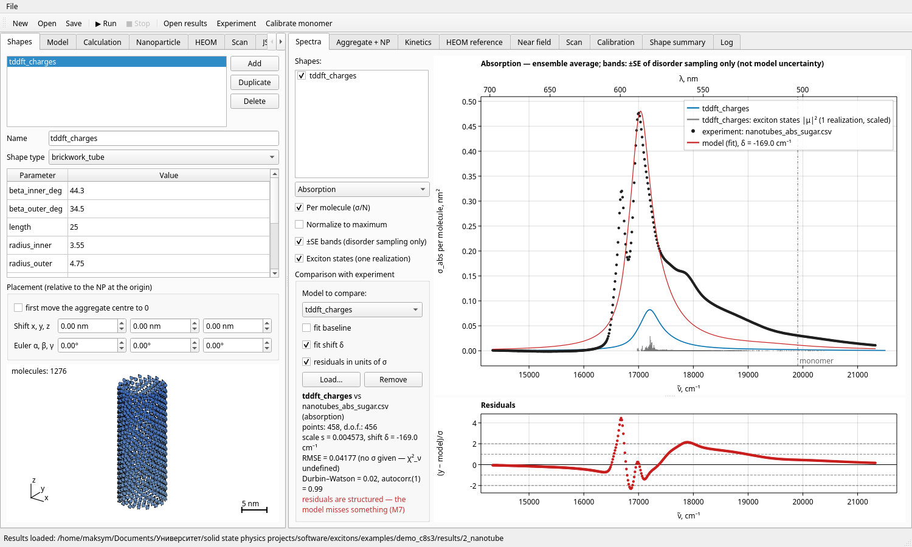
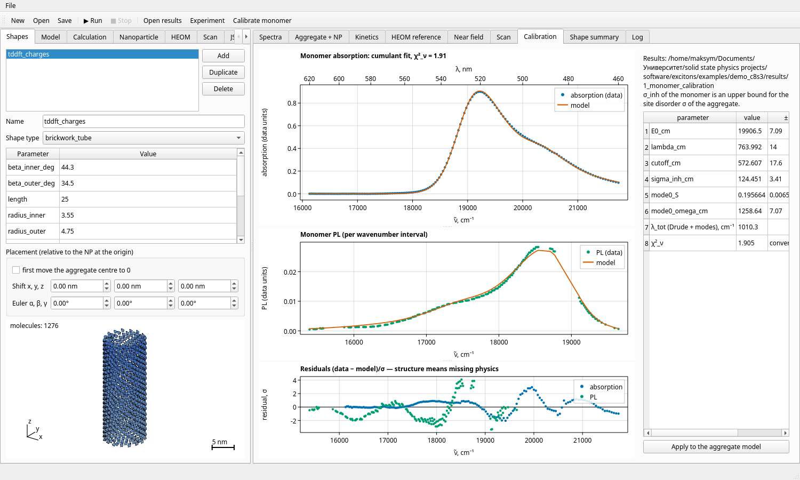
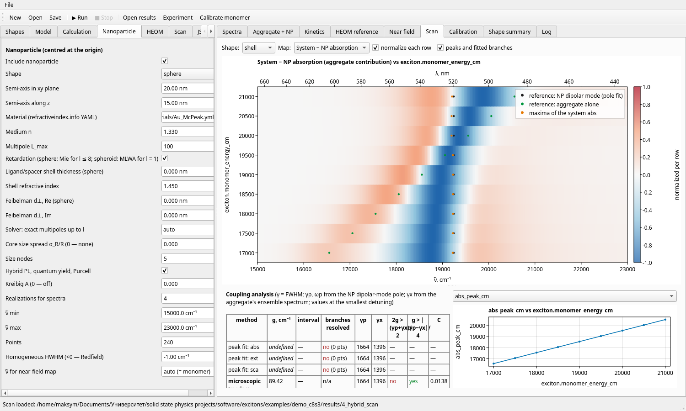
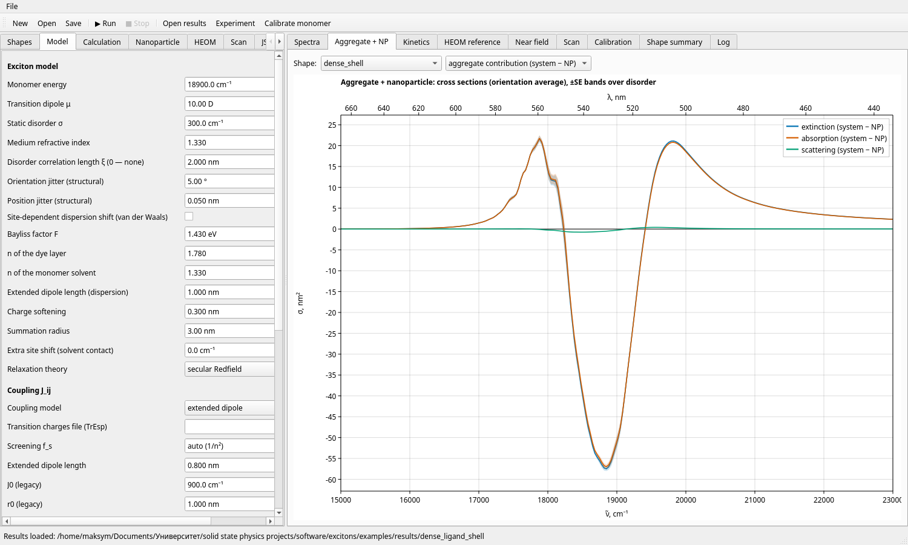
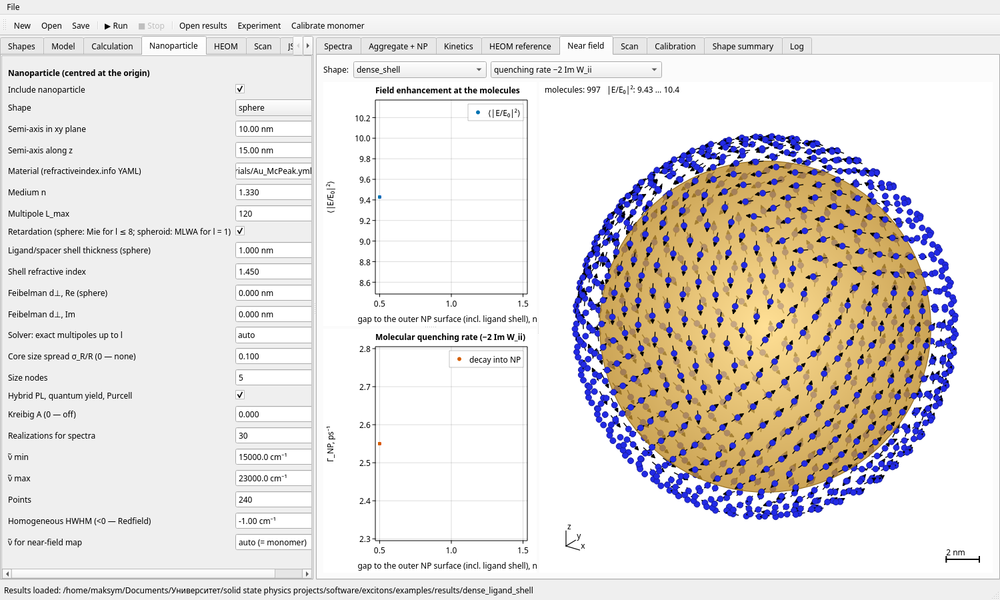
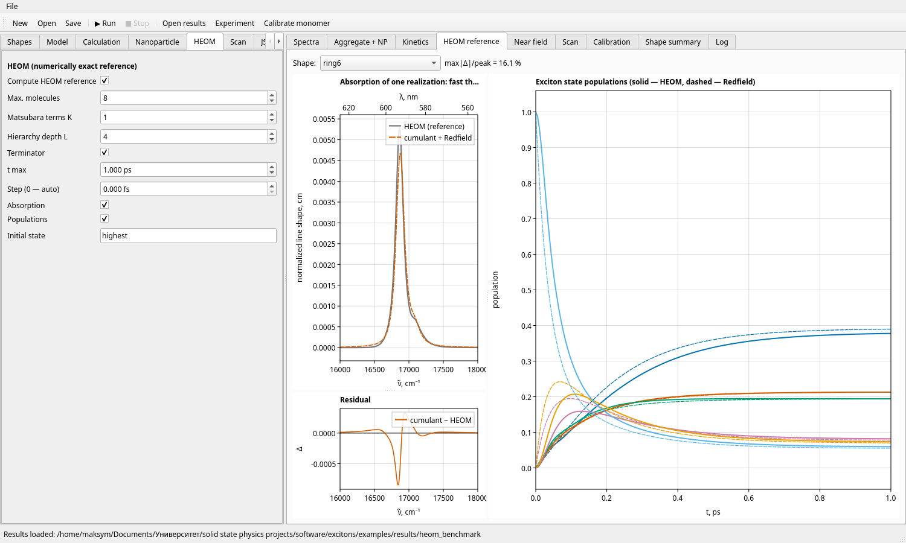
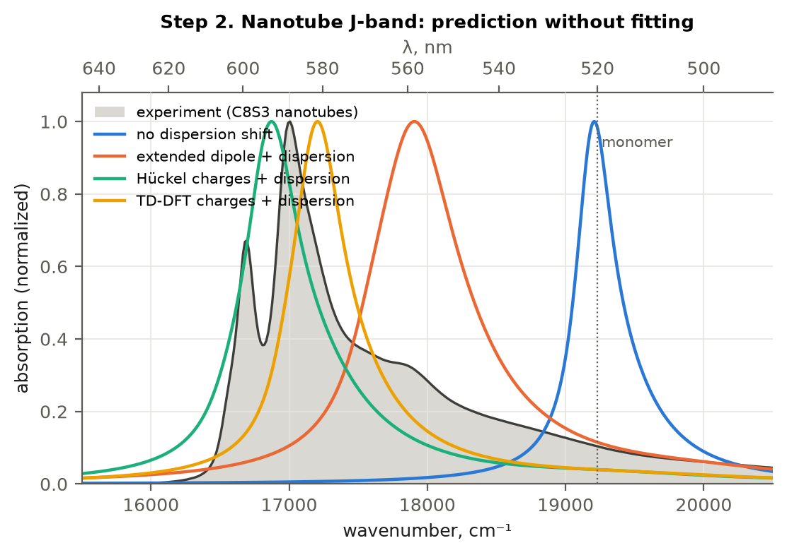

Exciton spectra of molecular aggregates and plasmon–exciton hybrids
SSP Nano calculates absorption, fluorescence, exciton kinetics and quantum yields of J- and H-aggregates of any shape — alone or next to a metal nanoparticle — and checks itself against exact theory and experiment.
15aggregate shapes
61automated tests
~10³molecules near a particle
C++20 · Qt 6CLI and GUI

Program map
What the program consists of, which method does each job, what it produces — and what is not there yet. Select a block to see the details; use the filter to show only one status.
Each block shows the method, what it gives, and a link to the formulas and code.
Methods: formulas and the code behind them
Units: energies in cm⁻¹, lengths in nm, dipoles in debye, ħ = 1. Code excerpts are abridged from the files named above each block (comments translated to English); paths are relative to software/.
Frenkel exciton Hamiltonian
✓Implemented
Each molecule is a two-level system. In the one-exciton manifold the Hamiltonian is a real symmetric N×N matrix; its eigenvectors give the exciton states.
ExcitonStates diagonalize(constEigen::MatrixXd& H, const Aggregate& agg, double mu_D) {
Eigen::SelfAdjointEigenSolver<Eigen::MatrixXd> es(H);
ExcitonStates s;
s.energies = es.eigenvalues();
s.c = es.eigenvectors(); // c(i, k): site i in state kEigen::MatrixX3d site_mu(N, 3);
for (Eigen::Index i = 0; i < N; ++i) site_mu.row(i) = mu_D * agg.dipoles[i].transpose();
s.mu = s.c.transpose() * site_mu; // exciton transition dipoles
s.mu2 = s.mu.rowwise().squaredNorm();
s.ipr = s.c.array().pow(4).colwise().sum().transpose(); // participation factor s_kreturn s;
}
Excitonic couplings
✓Implemented
Three levels of detail. The point dipole is valid when molecules are far apart; transition charges keep the shape of the transition density and stay accurate at contact distances.
The extended dipole is TrEsp with two charges ±μ/l. Charges are rescaled so that |Σqr| equals the measured transition dipole. Try the explorer below.
excitons/src/hamiltonian.cpp
case CouplingModel::PointDipole: {
const Vec3 n = rij / r;
constdouble kappa = mui.dot(muj) - 3.0 * mui.dot(n) * muj.dot(n);
return p.screening * units::dd_cm_per_D2_nm3 * p.mu_D * p.mu_D * kappa / (r * r * r);
}
// transition charges: sum over all pairs of atomic charges of the two moleculesfor (std::size_t a = 0; a < p.charges.size(); ++a)
for (std::size_t b = 0; b < p.charges.size(); ++b)
s += p.charges[a](3) * p.charges[b](3) / (pos[i][a] - pos[j][b]).norm();
J(i, j) = J(j, i) = p.screening * units::dd_cm_per_D2_nm3 * scale * scale * s;
Transition charges (TrEsp)
◐Partly implemented
Charges come from a file. They can be generated from a molecular geometry with a built-in Hückel calculation, or with the PySCF helper script (TD-DFT, electrostatic-potential fit of the transition density).
Status: the Hückel generator is part of the program; the TD-DFT route is a script written for one molecule and still has to become a general pipeline.
excitons/src/huckel.cpp
// Hückel matrix in units of |beta|: heteroatom parameters on the diagonal, bonds off-diagonal
H(k, k) = N ? -(pyrrole ? opt.h_N_pyrrole : opt.h_N_pyridine) : 0.0;
kk = std::exp(-((atoms[i].r - atoms[j].r).norm() - 0.140) / 0.0569); // C–C: beta depends on bond length
H(k, it->second) = -kk;
...
constEigen::VectorXd cH = es.eigenvectors().col(R.homo), cL = es.eigenvectors().col(R.homo + 1);
q(k) = std::sqrt(2.0) * cH(k) * cL(k); // HOMO→LUMO transition charge
Dispersive (van der Waals) site-energy shifts
✓Implemented
In a dense aggregate each molecule is red-shifted by the polarisable molecules around it. The shift depends on the local packing, so the inner and outer walls of a nanotube absorb at different energies.
After Megow et al., PCCP 17, 6741 (2015). The softening a₀ avoids a divergence for nearly coincident charges of close neighbours. For C8S3 this term supplies almost the whole J-band shift.
excitons/src/hamiltonian.cpp
// calibration: random molecular orientations at the same positions give the continuum shiftfor (int k = 0; k < K; ++k) {
for (auto& F : fr) F = Eigen::Quaterniond(g(rng), g(rng), g(rng), g(rng)).normalized().toRotationMatrix();
avg += sum_v2(agg, place(fr), q, p.cutoff_nm, p.softening_nm).mean();
}
avg /= K;
R.Q_cm_nm2 = R.continuum_cm / avg;
for (std::size_t i = 0; i < agg.size(); ++i) fr[i] = agg.frame(i); // the real orientationsconstEigen::VectorXd S = sum_v2(agg, place(fr), q, p.cutoff_nm, p.softening_nm);
R.dispersive_cm = R.Q_cm_nm2 * S;
R.shift_cm = R.dispersive_cm.array() + R.to_gas_cm + p.extra_shift_cm;
Disorder and ensemble statistics
✓Implemented
Spectra are averaged over realisations of the disorder until the standard error is below a tolerance. Observables (peak, width, Stokes shift) are taken from the averaged spectrum; their errors come from a bootstrap.
Structural disorder (random tilts and displacements) rebuilds the coupling matrix in every realisation.
Each molecule is coupled to its own harmonic bath: an overdamped (Drude) part for the solvent plus underdamped Brownian oscillators for intramolecular modes.
The Drude part of g(t) is summed analytically (Matsubara series with a tail correction); the mode part is integrated by FFT.
excitons/src/bath.cpp
double Bath::J_over_w(double w) const {
double v = 0.0;
if (lambda_cm > 0.0) v += 2.0 * lambda_cm * wc / (w * w + wc * wc); // Drudefor (constauto& m : modes) { // Brownian oscillatorsconstdouble lk = m.huang_rhys * m.omega_cm;
constdouble d = m.omega_cm * m.omega_cm - w * w;
v += 2.0 * lk * m.omega_cm * m.omega_cm * m.gamma_cm / (d * d + m.gamma_cm * m.gamma_cm * w * w);
}
return v;
}
Cumulant absorption and fluorescence
✓Implemented
Every exciton state contributes a line whose shape follows from g(t), narrowed by delocalisation and broadened by its population decay.
One FFT per state gives the whole line. The same function, kept complex, is the exciton resolvent used in the aggregate + particle response.
excitons/src/spectra.cpp
constdouble shift = emission ? 2.0 * s * lambda_ : 0.0;
for (std::size_t j = 0; j < n_; ++j) {
constdouble t = dt_ * static_cast<double>(j);
conststd::complex<double> gj = emission ? std::conj(g_[j]) : g_[j];
std::complex<double> F = std::exp(-s * gj - 0.5 * Gamma_cm * t + std::complex<double>(0.0, shift * t));
if (j == 0) F *= 0.5; // trapezoid rule
X[j][0] = F.real(); X[j][1] = F.imag();
}
fftw_execute_dft(static_cast<fftw_plan>(plan_), X, X); // L(Δ) = dt · Re X / π
Redfield relaxation and kinetics
✓Implemented
Populations of exciton states obey a Pauli master equation with secular Redfield rates. Detailed balance makes the stationary state Boltzmann.
Steady-state populations under pumping weight the fluorescence lines; the quantum yield is ΣΓradP.
excitons/src/relaxation.cpp
constEigen::MatrixXd p = st.c.array().square().matrix(); // p(i,n) = c_in²constEigen::MatrixXd overlap = p.transpose() * p; // Σ_i c_in² c_im²for (Eigen::Index n = 0; n < N; ++n)
for (Eigen::Index m = 0; m < N; ++m)
if (m != n) K(m, n) = overlap(m, n) * bath.rate_spectrum(st.energies(n) - st.energies(m));
for (Eigen::Index n = 0; n < N; ++n) K(n, n) = -K.col(n).sum();
Modified Redfield theory
✓Implemented
The diagonal part of the exciton–phonon coupling is treated exactly through g(t); only the off-diagonal part is perturbative. The rate is an overlap of donor fluorescence and acceptor absorption.
Checked against detailed balance (0.5 %), the Redfield limit (3 %) and HEOM for a dimer with λ ≈ J.
excitons/src/modified_redfield.cpp
constdouble Om = st.energies(M) - st.energies(N) - 2.0 * lam * (a - p);
constdouble Lam = a + b - 2.0 * p;
for (std::size_t j = 0; j < nt; ++j) {
const cd e = std::exp(cd(0.0, Om * t) - Lam * g[j]);
const cd br = (q1 - q2) * g1[j] + cd(0.0, 2.0 * lam * q1); // g1 = dg/dt, g2 = d²g/dt²constdouble f = (e * (p * g2[j] - br * br)).real();
acc += (j == 0 ? 0.5 : 1.0) * f;
}
K(N, M) = std::max(0.0, 2.0 * acc * dt);
HEOM reference
✓Implemented
The hierarchical equations of motion solve the same model without the cumulant and Markov approximations. The program uses them as a built-in reference for small aggregates (Drude bath).
Depth and number of Matsubara terms are parameters; the GUI shows HEOM and the fast theory side by side with the difference.
Vibronic absorption: Holstein model
✓Implemented
One intramolecular mode per molecule, one-particle approximation: the excited molecule carries ν vibrational quanta, all others stay in their vibrational ground state.
Reproduces the Poisson progression of the monomer and the growth (J) or loss (H) of the 0–0 band. Vibronic fluorescence needs two-particle states — planned.
excitons/src/vibronic.cpp
for (Eigen::Index v = 0; v < V; ++v) // Franck–Condon factors
F(v) = std::exp(-0.5 * p.huang_rhys + 0.5 * v * std::log(std::max(p.huang_rhys, 1e-300)) - 0.5 * std::lgamma(v + 1.0));
constEigen::MatrixXd FF = F * F.transpose();
...
Hv(n * V + v, n * V + v) = H(n, n) - p.huang_rhys * p.omega_cm + double(v) * p.omega_cm;
Hv.block(n * V, m * V, V, V) = H(n, m) * FF;
Nanoparticle: multipole response
✓Implemented
The field that the particle adds at each molecule is expanded in multipoles. Close to the surface many orders are needed (up to l = 120); the bare particle's cross sections come from full Mie theory.
For spheroids the same expansion is written in spheroidal coordinates with Legendre functions of the second kind. A Gauss–Hermite average over the radius models a size distribution.
excitons/src/plexciton.cpp
// sphere: D_l depends only on l, so W = pref · Σ_l D_l(ω) · G_l with precomputed N×N matrices G_lfor (int l = 1; l <= particle_->l_max(); ++l) {
const cd Dl = d(t0) / terms[t0].w;
Wr.noalias() += Dl.real() * Gl_[l - 1];
Wi.noalias() += Dl.imag() * Gl_[l - 1];
}
F.W = pref * (Wr.cast<cd>() + cd(0.0, 1.0) * Wi.cast<cd>());
Ligand shell and Feibelman surface response
◐Partly implemented
A dielectric shell around the metal core and the quantum spill-out of the electron density both enter as boundary conditions of the multipole problem.
Radial functions are scaled by the outer radius — otherwise the linear system becomes singular for l ≳ 7. Status: spheres only; spheroids are planned.
plasmonics/src/layered.cpp
constdouble rp = std::pow(R / bR, l), rq = std::pow(bR / R, l + 1); // scaled r^l and r^-(l+1)constdouble dp = L / R * rp, dq = -(L + 1) / R * rq;
// (1) eps_in dphi_in - eps_out dphi_out = 0 (2) phi_out - phi_in + d (dphi_out - dphi_in) = 0
A(e1, col) += eps[b] * der;
A(e2, col) += -val - d * der;
Retardation corrections
✓Implemented
The quasi-static response is corrected for radiation damping and dynamic depolarisation: exact Mie coefficients for spheres, the modified long-wavelength approximation for spheroids.
Molecules and particle are solved together. The exciton block uses the same cumulant resolvent as the bare-aggregate spectrum, so both spectra are consistent by construction.
Xn(ω) is the complex cumulant response of exciton n; M contains the local-field factors LiTμ̂i projected on the exciton states.
excitons/src/plexciton.cpp
// in the exciton basis: A = diag(a_n) + Uᵀ W U, M' = Uᵀ MEigen::MatrixXcd A = U.transpose().cast<cd>() * F.W * U.cast<cd>();
for (Eigen::Index n = 0; n < N; ++n) A(n, n) += diag[rr][n * nw + q];
X = A.partialPivLu().solve(Mx);
constEigen::Matrix3cd a_tot = a_np + c_mol * (Mx.transpose() * X);
// cross(a, ext, sca) for a = a_tot:
ext = 4.0 * pi * F.k * a.trace().imag() / 3.0;
sca = 8.0 * pi / 3.0 * std::pow(F.k, 4) * a.cwiseAbs2().sum() / 3.0;
Fast solver for large aggregates
✓Implemented
Low multipoles couple all molecules but have low rank; high multipoles are short-ranged and nearly diagonal in the exciton basis. This turns an N×N solve per frequency into a small one.
Error against the exact solver for 300 molecules: 0.7 % (l ≤ 8 exact) and 0.16 % (l ≤ 16).
excitons/src/plexciton.cpp
constEigen::MatrixXcd Y = inv.asDiagonal() * Mx, Z = inv.asDiagonal() * B;
Eigen::MatrixXcd S = dl.asDiagonal() * (B.transpose() * Z);
S.diagonal().array() += 1.0;
X = Y - Z * S.partialPivLu().solve(dl.asDiagonal() * (B.transpose() * Y));
Decay near the particle: Purcell factor and quantum yield
✓Implemented
A molecule next to the metal radiates together with the dipole it induces in the particle, and loses energy to absorption in the metal. Their balance decides between enhancement and quenching.
Validated against the exact Mie solution for a dipole near a sphere: 1–3 % for R ≤ 10 nm; the error grows for R ≳ 20 nm (see Validation).
excitons/src/plexciton.cpp
constEigen::Vector3cd me = F.L[i].transpose() * agg_.dipoles[i].cast<cd>();
o.rad_enhancement = me.squaredNorm(); // |Lᵀ mu|²: emission through the particle
o.nonrad_to_np_ps = std::max(0.0, (-2.0 * Wa(ii).imag() + 2.0 * pref * ret) * units::rad_ps_per_cm);
constdouble grad = gamma0_ps * o.rad_enhancement;
o.quantum_yield = grad / (grad + o.nonrad_to_np_ps + gamma_nr_ps);
Coupling strength and strong-coupling criteria
✓Implemented
The collective coupling g between the molecular layer and the dipolar plasmon is computed from the plasmon pole and the mode field at the molecules — not from fitted peak positions, which overestimate g when the branches are not resolved.
Before an aggregate is calculated, the molecule itself is calibrated: absorption and fluorescence of the monomer are fitted together, which fixes the transition energy, the bath and the static width. The transition dipole follows from the absolute extinction.
Static broadening is applied in the time domain (a factor exp(−σ²t²/2)), so the model is evaluated directly at the data points. Without a fluorescence spectrum the bath is not determined — always supply one.
Parameters and a 3D preview on the left, results on the right. Every plot can be zoomed, exported (PNG, SVG, CSV) and compared with measured data.

Calibration. Monomer absorption and fluorescence, fitted model, residuals and parameters with errors.

Scan. The exciton energy is tuned across the plasmon of a gold sphere; coupling analysis below the map.

Aggregate + particle. Contribution of the molecular layer to extinction, absorption and scattering.

Near field. Field enhancement, quenching rate and quantum yield for every molecule.

HEOM reference. The fast theory against the numerically exact calculation.

Example study. J-band of the C8S3 nanotube predicted at four levels of the model, without fitting the aggregate spectrum.
Configuration
One JSON file describes a calculation. Unknown keys are errors; keys that start with an underscore are comments; file paths are relative to the config. The GUI edits the same file.
TrEsp charges: columns x y z q (nm, molecular frame, x along the dipole)
dispersion.enabled
false
switch on environment-dependent site shifts
dispersion.F_eV, n_aggregate, n_solvent
1.43, 1.78, n_medium
Bayliss factor, refractive index of the dye layer and of the monomer's solvent
dispersion.softening_nm, cutoff_nm
0.3, 3.0
charge softening a₀ and summation radius
dispersion.use_coupling_charges
false
use the TrEsp charges of the coupling for Vmk
bath, decay, pump — line shapes and emission
Key
Default
Meaning
bath.type
drude_lorentz
or ohmic_exponential
bath.lambda_cm, cutoff_cm
50, 100
reorganisation energy and cut-off of the overdamped part
bath.temperature_K
300
temperature
bath.modes[]
[]
vibrational modes: omega_cm, huang_rhys, gamma_cm
decay.monomer_lifetime_ns
0
radiative lifetime of the monomer (0 — from μ and ω)
decay.nonradiative_ps
0
intrinsic non-radiative rate, ps⁻¹
pump.type, excitation_cm
oscillator_strength
how the states are populated: by oscillator strength or by a laser line
spectrum, ensemble, dynamics — numerics
Key
Default
Meaning
spectrum.wmin_cm, wmax_cm, nw
15500, 18000, 1800
spectral window and number of points
spectrum.t_max_ps
100
time window of the line-shape integrals
ensemble.min_realizations, max_realizations
20, 400
limits of the disorder average
ensemble.rel_tolerance
0.01
stop when the standard error / peak is below this value
dynamics.enabled, t_max_ps, n_times, initial
true, 20, 200, brightest
population kinetics
nanoparticle — the particle and the hybrid calculation
Key
Default
Meaning
enabled
false
include a particle centred at the origin
shape
sphere
sphere, prolate (rod), oblate (disk)
semi_axis_xy_nm, semi_axis_z_nm
15, 15
semi-axes of the metal core
material_file | drude
—
refractiveindex.info YAML file, or Drude parameters eps_inf, omega_p_eV, gamma_eV
n_medium
1.33
refractive index of the surrounding medium
l_max
40
highest multipole; the log warns when it is too low
shell_thickness_nm, shell_n
0, 1.45
ligand / spacer shell (sphere)
d_perp_nm, d_perp_im_nm
0, 0
Feibelman parameter d⊥ (sphere)
kreibig_A
0
size-dependent damping, γ = γbulk + A·vF/R
size_sigma_rel, size_nodes
0, 5
relative spread of the core radius and number of quadrature nodes
fast_l
auto
auto, 0 (exact) or the highest exactly treated multipole
emission
true
hybrid PL, quantum yield, Purcell factors
holstein, heom, scan, monomer_fit — extras
Key
Default
Meaning
holstein.enabled, omega_cm, huang_rhys, nu_max
false, 1300, 0.6, 4
vibronic absorption
heom.enabled, depth, matsubara, max_sites
false, 4, 1, 10
exact reference for small aggregates
scan.parameter, from, to, steps
—
scan any JSON path, e.g. exciton.disorder_sigma_cm
monomer_fit.absorption_file, emission_file
—
calibration run: spectra, units, start values, fit flags
Build and run
Needs a C++20 compiler, CMake ≥ 3.24, Qt ≥ 6.5 (Widgets, Concurrent, Svg), Eigen ≥ 3.4, FFTW 3; GoogleTest for the tests.
shell
cd software
scripts/build.sh # configure + build (Release)
ctest --test-dir build # 61 tests
build/gui/ssp_gui # start the interface
Needs the Xcode command-line tools and Homebrew. The script installs the dependencies, builds, bundles Qt into the app, signs it ad hoc and writes a zip. The app has no Apple developer signature: on another Mac use right-click → Open at first launch. This script has not been run on real hardware yet.
shell
xcode-select --install
cd software
bash packaging/macos/build_macos.sh
open packaging/out/ssp-macos-$(uname -m)/ssp_gui.app
The tested route is a cross-build in Docker (from Linux, macOS, or Windows with WSL 2). It produces ssp-windows-x64.zip with the programs, all DLLs and the examples — extract and start ssp_gui.exe.
shell
cd software
packaging/windows/build_windows.sh # result: packaging/out/ssp-windows-x64.zip
Native build in an MSYS2 UCRT64 shell (not tested yet):